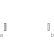

LineForceBaseBase model for line force elements |

|
Information
This information is part of the Modelica Standard Library maintained by the Modelica Association.
All line force elements should be based on this base model. This model defines frame_a and frame_b and computes the (guarded) relative distance s. An assertion is raised if the relative distance length became smaller as parameter s_small.
Parameters (3)
| s_small |
Value: 1e-10 Type: Distance (m) Description: Prevent zero-division if distance between frame_a and frame_b is zero |
|---|---|
| fixedRotationAtFrame_a |
Value: false Type: Boolean Description: =true, if rotation frame_a.R is fixed (to directly connect line forces) |
| fixedRotationAtFrame_b |
Value: false Type: Boolean Description: =true, if rotation frame_b.R is fixed (to directly connect line forces) |
Connectors (2)
Components (1)
| world |
Type: World |
|---|
Extended by (3)
|
Modelica.Mechanics.MultiBody.Interfaces Base model for massless line force elements |
|
|
Modelica.Mechanics.MultiBody.Forces General line force component with two optional point masses on the connection line |
|
|
Modelica.Mechanics.MultiBody.Forces General line force component with an optional point mass on the connection line |